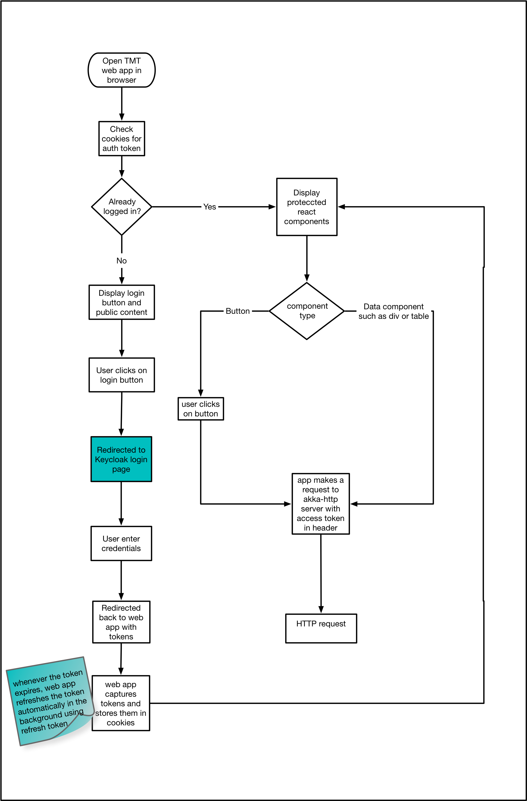

Auth Components
esw-ts exposes react components to enable authentication and authorization. It is built in TypeScript on top of keycloak-js which is JavaScript adapter provided by Keycloak.
Note: The Keycloak JavaScript adapters have been deprecated and removed after Keycloak-25.x, which we are still using. Before upgrading to newer versions of Keycloak, the code based on these adapters will need to be rewritten.
Implementation
Core implementation of Auth Components of ESW-TS, uses
- keycloak-js - keycloak JavaScript adapter (Note: Deprecated/removed after Keycloak-25.x)
- React - JavaScript library for building user interfaces
- Typescript - Types superset of JavaScript which compiles to JavaScript
- csw-location-service - resolve keycloak using Location Service HTTP endpoint
Keycloak
In order for web application utilize keycloak following steps are needed:
-
Registered web application as a public keycloak client Please refer to keycloak documentation for details.
-
Create new Keycloak client instance This instantiation expects config which includes keycloak server URL and some application specific config like
realmandclientId. Auth Service uses CSW Location Service to resolve keycloak server.
See, how to configure realm & client-id here
- To call secure end point, web application first needs to be authenticated using keycloak server. There are two options to make this adapter automatically authenticate -
login-requiredandcheck-sso.login-requiredwill automatically authenticate if the user is already logged-in, otherwise it will display keycloak login page.check-ssowill only authenticate if the user is already logged-in. If the user is not logged-in the browser will be redirected back to the application and remain unauthenticated.
Auth components of ESW-TS use check-sso to instantiate keycloak. It shows secure components if user is already logged in. If user is not authenticated then Login component gets rendered. If user clicks on login button, it instantiates keycloak using login-required. This redirects user to keycloak login page. As access token has very short life span, at time of keycloak instantiation, these Auth Components also add hooks to refresh token. This gives seamless user experience as user will not have to login again.
Keycloak adapter supports three authorization flows e.g. authorization code flow, implicit flow and hybrid flow. Auth components in ESW-TS, uses hybrid flow as it has better performance than authorization code flow and unlike implicit flow, hybrid flow makes refresh token available to application. For more information please refer keycloak documentaion for authorization flows.
Working of Auth Components
When user opens Web application in the browser:
-
AuthContextProvidercomponent gets mounted. Which does instantiation of keycloak client and initialize keycloak JavaScript adapter withcheck-ssoandhybridauthorization flow. -
It also creates hooks for refreshing token, and when token expires it silently refreshes token resulting seamless user experience once logged in.
-
After authentication is done via keycloak JavaScript adapter,
AuthContextis extracted in domain model and this data is passed down the component tree using React Context API. -
AuthContextgives handle to token, realm and resource roles,userInfo. Any component which want to use this information can become consumer ofAuthContext.
For example:
- Typescript
-
source
const { auth } = useContext(authContext)
Access token can be extracted from auth and it can be sent in Authorization header for calling secure API.
For example:
const SampleComponent = () => {
const url = 'http://localhost:8080/secure-restful-service';
const auth = useContext(AuthContext) //AuthContext from esw-ts
const req = new XMLHttpRequest();
req.open('GET', url, true);
req.setRequestHeader('Accept', 'application/json');
//extract token from auth context and set Authorization header
req.setRequestHeader('Authorization', 'Bearer ' + auth.token);
req.onreadystatechange = function () {
if (req.readyState == 4) {
if (req.status == 200) {
alert('Success');
} else if (req.status == 403) {
alert('Forbidden');
}
}
}
req.send();
};
The following diagram explains JavaScript application flow for making request to secure HTTP API:

-
When user opens Web application in the browser, csw-aas-js checks if user is already logged in using
check-ssomode. -
If user is not logged in then
Loginbutton is shown. -
When user clicks on “login”, user will be redirected to keyclok login page.
-
This completes authentication process. Once authentication is done,
AuthContextProviderextractsAuthContextdomain model and make it available to consumers ofAuthContext. -
Protected react components can be shown based on information in
AuthContext. -
For example,
CreateConfigcomponent can be shown only to users havingconfig adminrole. After the user is authenticated the application can make requests to RESTful services secured by Keycloak by including the bearer token in theAuthorizationheader. -
This completes workflow for web application calling secure HTTP endpoint.